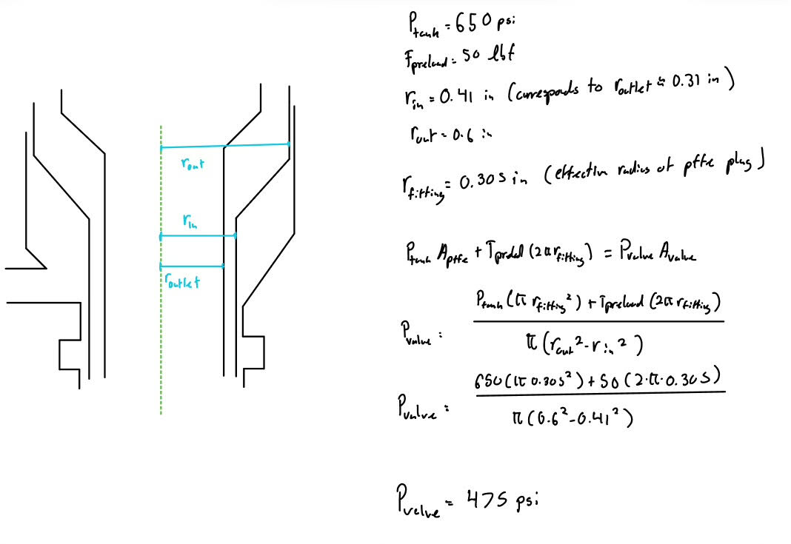
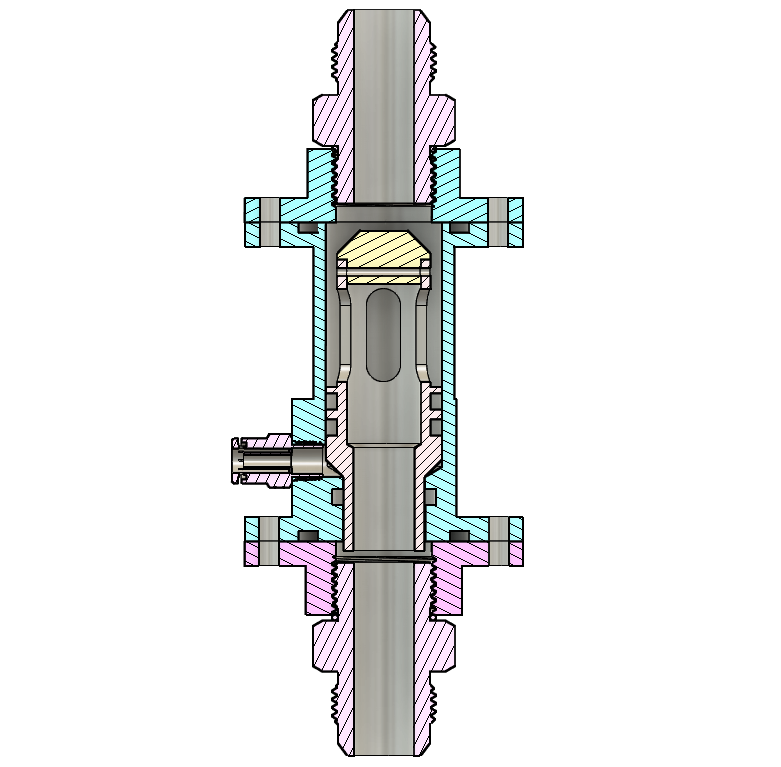
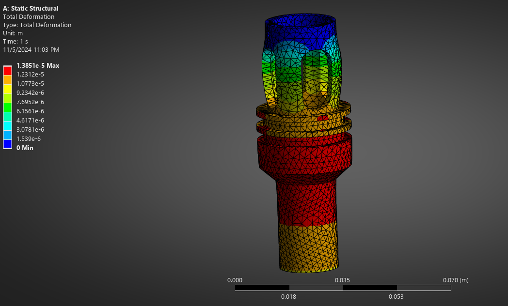
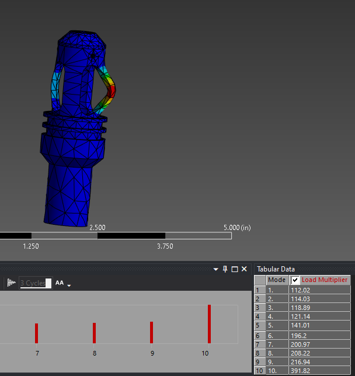

Custom Poppet Valve
Poppet Valve Overview
Eureka 3 is my undergraduate student rocketry team's third liquid rocket and is the most recent step the team is taking towards developing a liquid spaceshot. This rocket marked a transition for the team away from utilizing mostly off the shelf hardware towards developing our own mass optimized custom flight hardware. As a part of this push the main valves of the rocket were identified as an area where developing a custom set of flight hardware could improve the rocket's design. Previous designs of the main valves across both previous liquid rockets and tests stands made use of largely off the shelf parts combining pneumatic cylinders and balls valves to achieve a reliable main valve system. This system, while reliable and flight proven, is fairly bulky and space inefficient. Additionally valves of this type require additional structure to mount the valves in place and transfer loads from the engine. To address these issues it was decided that the best course of action would be to develop our own set of poppet valves that were compact enough to save space compared to the traditional design and were strong enough to transfer flight loads without the need of additional structure. In addition since poppet valves open and close via the pressurization and venting of a pilot volume all systems needed to actuate the valves could be placed on the ground, further saving weight.
Preliminary Design Considerations
Poppet valves operate on the principle of pressure-area ratios. The idea of a poppet valve is that the inner section of the valve, the poppet, can seal against a large upstream pressure by having a smaller pilot pressure below the poppet holding it up. This is achieved by designing the poppet such that the smaller pilot pressure acts over a larger area than the upstream pressure, allowing for a net upwards sealing force to act on the poppet. As mentioned before, this also makes the poppet valve very simple to open and close because all that needs to be done is to either vent or pressurize the pilot volume.
With this working principle in mind, the first step I took was to determine an area ratio to allow me to calculate what the pilot pressure would need to be. To inform this decision, I considered what the inner radius of the poppet would need to be to allow for proper sealing with the 1 in ID hardware the poppet would be interfacing, as well as minimizing the pressure drop through the poppet. With this, as well as the space the poppet had available to it within the rocket's airframe in mind, I was able to determine a set of reasonable radii for the inner and outer diameters for the poppet and casing. From there, I was able to calculate a working pilot pressure of 475 psi to hold an upstream pressure of 650 psi.


Poppet Design
This version of the poppet was meant to serve as a unit test version of the poppet valve allowing the team to test poppet functionality and operations separate from the rest of the propulsion system. As such for the outer casing I opted for a flange and O-ring face seal design at the top and bottom end. This was done such that an adapter piece could be added to the poppet adapting it to a fitting or could be bolted directly into a tank or injector face allowing for full integrated tests. This outer casing was designed with a 1/8 in thickness to provide ample safety margin to avoid bursting with the thickness potentially being decreased in later iterations. In addition an additional NPT port was added that attaches to a high pressure PTC fitting to be used as the fill/vent port for the pilot volume.
This poppet utilizes a straight through design meaning that when the poppet valve is opened fluid is allowed to flow through the inner poppet and out the other side. This is achieved by making the inner poppet hollow, with four slots that have a combine area of 1 in2 being machined into it allowing for fluid to enter and flow through the inner volume. THe poppet was designed with a PTFE insert on its top which is fastened to the inner poppet via a retaining pin. This PTFE insert presses against the fitting, tank bottom, or injector face resulting in the seal that holds the tank pressure in. The poppet itself is sealed in two places along the inner face. The first double O-ring seal prevents the pilot volume from leaking into the tank or vice versa, preventing the accidental release of nitrous into the rest of the propulsion system. The second lower seal is also for the pilot volume preventing it from leaking into the injector.
Poppet Analysis
With the design made, I conducted both FEA and CFD analysis to confirm that the poppet worked as expected before manufacturing. Two types of FEA were conducted. The first was a burst FEA on the outer poppet casing which finding that the casing had ample safety factor at the maximum pressures that were expected during operations. The second FEA was a deflection and buckling analysis on the columns of the inner poppet when it was pressed against the sealing face. This was accomplished by applying a fixed support at the tip of the PTFE insert and then a pressure equivalent to the pilot pressure at the bottom face of the inner poppet, simulating the effects of a fully sealed poppet. TNBe results of this analysis revealed a maximum deflection of 1.4e-5 which was deemed well within a reasonable range of operation. This analysis was then expanded into a full buckling analysis which revealed a minimum load factor of 112 which indicated that the poppet was operating in a regime well away from buckling.
In addition to FEA, CFD analysis was also conducted on the flow through the poppet. This was set up utilizing an incompressible internal fluid flow framework with a mass flow inlet and pressure outlet boundary conditions. For the simulation nitrous was used as the fluid with a K-Omega SST viscosity model and uniform boundary layer. The results of this analysis was that the poppet only experienced 15 psi of pressure loss when fully opened which was considered within the pressure loss budget allocated for the poppet during operation.


Current Project Status
Unfortunately these poppets were unable to be fully manufactured and tested before I left the team to pursue study abroad. This was due to the complex geometry of the poppets requiring the use of CNC machining which my student team did not have available to them. As such the parts needed to be contracted out to an external machine shop, namely JLC PCB. Before this was done a few revisions were made to the design before I left. Namely the flange seal was removed and replaced with two concentric O-ring seals that would slide into cavities bored into the injector face and tank bulkhead. With these changes made the poppets have been ordered, manufactured, and received with unit testing showing that the poppet works as expected. Currently the poppet has been fully integrated into Eureka 3's propulsion architecture with current cold flow testing focusing on tuning valve timing to help overcome issues that the team has been having with their ignition procedures.